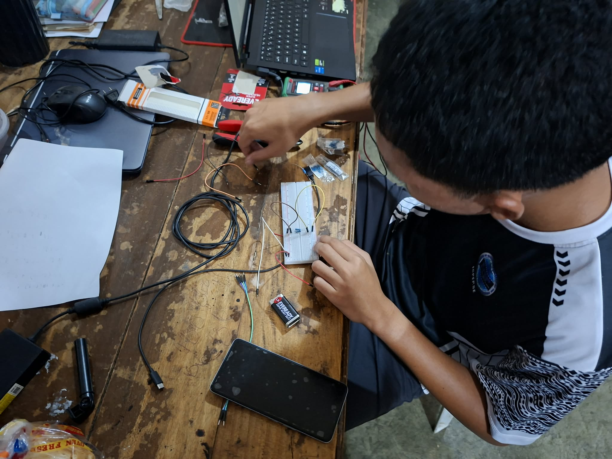

Today
A glimpse into my daily life
About Me Today
My name is Keith Jinon. Today, I am focused on keeping up with my studies, personal responsibilities, and the things I am currently learning. I try to stay productive by following a daily routine that helps me manage my time and finish my tasks.
My Daily Routine
On a usual day, I start by getting ready and preparing myself for the activities ahead. I spend part of my day studying, reviewing lessons, and working on school-related tasks. I also make time to rest, eat, and take care of myself so I can stay focused.
During my free time, I enjoy watching anime and listening to music. These activities help me relax, feel entertained, and take a break from schoolwork.
My Current Activities
Right now, I am working on building a logic gate circuit on a breadboard for our circuit subject project. This hands-on project allows me to apply the theoretical concepts I've learned in class and gain practical experience with electronic components. It's challenging but rewarding to see how logic gates work in real circuits and how they form the foundation of digital systems.

📚 Current Focus Areas
- 🔧 Circuit Design: Hands-on breadboard projects and logic gate implementation
- 💻 Programming: Developing coding skills for embedded systems and software applications
- 📖 Academic Studies: Maintaining With Honor status through dedicated study and time management
- 🏃 Physical Fitness: Regular running to maintain health and mental clarity